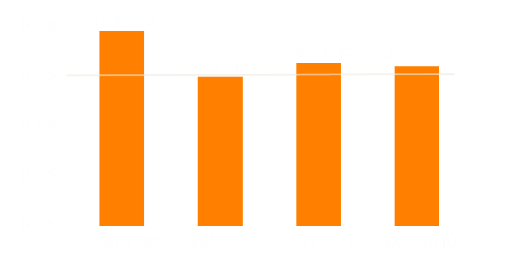

Quantifying and visualising
migration flows around the globe
Nikola Sander and Guy Abel
Wittgenstein Centre, Vienna Institute of Demography
IGU Regional Conference, Cracow, August 2014
Slides: nikolasander.com/igu2014
Global migration has accelerated and diversified
Limited empirical testing
Largely due to a lack of data.
Problem: countries measure migration flows in different ways.
Harmonisation only for Europe, e.g. IMEM
Data on migrant stocks
Widely captured in population censuses.
Country of birth != country of current residence.
UNPD released global bilateral dataset in 2013.
Accumulative measure that cannot capture recent trends.
How many people migrated in the world in 2005-10?
Quantifying Global International Migration Flows
Guy Abel & Nikola Sander.
In Science; 28 March 2014; vol 343: 1520-1522.

Estimating flows from stocks
UN stock datalifetime transitions static snapshot of 1990, 2000, 2010 ~220 countries |
➜ |
Our flow estimates5-year transitions dynamic movements 1990-95 to 2005-10 196 countries |
Hypothetical migrant stocks in 2000

Hypothetical migrant stocks in 2000 & 2010

Hypothetical migrant stocks in 2000 & 2010

From stocks to flows
From stocks to flows
Estimated flow matrix

No rising tide of migration
About 0.6 % of world population have moved over 5-year periods since 1995.

North America
|
EuropeFmr USSR |
W & S AsiaEast & SE Asia |
Africa |


Quantifying Global International Migration Flows.
Abel & Sander, 2014. In Science, Vol. 343, pp.1520-22.
"The Global Flow of People"
Interactive data visualisation
circular-world.com
A collection of our circular migration plots
nikola.sander@oeaw.ac.at
@nikolasander